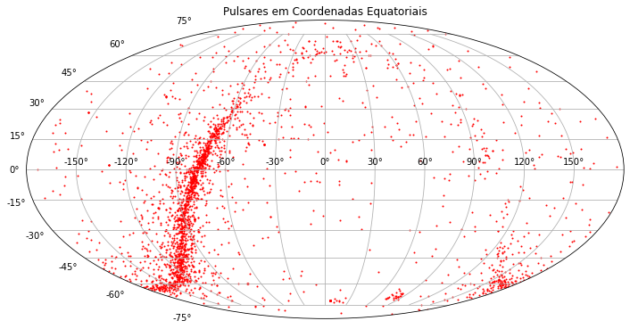
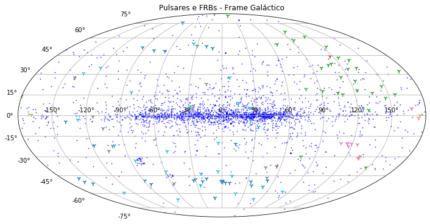
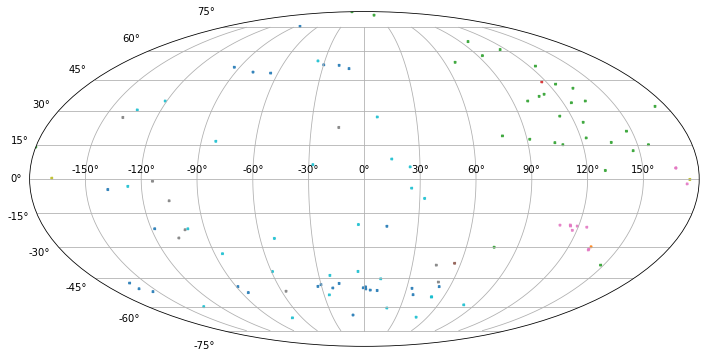

Pulsares
# Importando os módulos necessários
import numpy as np
import matplotlib.pyplot as plt
from astropy.io import ascii
from astropy.coordinates import SkyCoord
import astropy.coordinates as coord
import astropy.units as u
import pandas as pd
Pulsares
Podemos acessar o catálogo de pulsares em https://www.atnf.csiro.au/research/pulsar/index.html
“The ATNF Pulsar Catalogue”, R. N. Manchester, G. B. Hobbs, A. Teoh & M. Hobbs, Astronomical Journal, 129, 1993-2006 (2005) and by quoting the web address http://www.atnf.csiro.au/research/pulsar/psrcat for updated versions.
Este catálogo pode ser acessado online ou pelo programa psrcat. Eu apenas salvei as informações em um formato CSV.
# Lemos os dados, definimos o separador, cuidados do cabeçalho e dos valores esquisitos que aparecem no arquivo.
df = pd.read_csv("ATNFcatalogP0.csv", sep=";", header=0, na_values="*", keep_default_na=True)
#Horrível mas ocabecalho original tem duas linhas, estou jogando uma fora.
df = df.drop([0])
#Voilá
df.head(3)
| num | NAME | Gl | Gb | RAJD | DECJD | P0 | DM | S1400 | R_LUM14 | Unnamed: 10 | |
|---|---|---|---|---|---|---|---|---|---|---|---|
| 1 | 1 | J0002+6216 | 117.327 | -0.074 | 0.742375 | 62.269278 | 0.115364 | 218.60 | 0.02 | 8.90e-01 | NaN |
| 2 | 2 | J0006+1834 | 108.172 | -42.985 | 1.520000 | 18.583056 | 0.693748 | 11.41 | NaN | NaN | NaN |
| 3 | 3 | J0007+7303 | 119.660 | 10.463 | 1.757083 | 73.052056 | 0.315873 | NaN | NaN | NaN | NaN |
Coordenadas Galacticas
# pandas não reconheceu l e b como números, corrigimos isto aqui.
df["Gl"] = df.Gl.astype(float)
df["Gb"] = df.Gb.astype(float)
# Vamos usar uma coordenada do tipo ângulo do astropy.
# a Longitude Galáctica vai de é um ângulo de -180 a 180
# Passamos tudo para radianos
GL = coord.Angle(df.Gl*u.degree)
GL = GL.wrap_at(180*u.degree)
df["GB"] = coord.Angle(df.Gb*u.degree).radian
df["GL"] = GL.radian
fig = plt.figure(figsize=(12,8))
ax = fig.add_subplot(111, projection="mollweide")
ax.set_title("Pulsares em Coordenadas Galácticas")
ax.scatter(df.GL, df.GB, s = 1)
ax.grid(True)
#fig.savefig('PulsarsG.png', dpi=150)
plt.show();

Coordenadas Equatoriais
# Astropy sabe transformar os sistemas de coordenadas.
DATA = SkyCoord(l = df.GL, b = df.GB, frame = "galactic", unit = u.rad )
DATARaDec = DATA.icrs
# Ascenção Reta é um ângulo de -180 a 180
# Skycoord devolve os parâmetros em ângulos, vamos voltar para radianos, por causa do plot.
RAradian = DATARaDec.ra.wrap_at(180*u.degree).radian
DECradian = DATARaDec.dec.radian
fig = plt.figure(figsize=(12,8))
ax = fig.add_subplot(111, projection="mollweide")
ax.set_title("Pulsares em Coordenadas Equatoriais")
ax.scatter(RAradian, DECradian, s = 1, c="red")
ax.grid(True)
#fig.savefig('PulsarsICRS.png', dpi=150)
plt.show();

Fast Radio Bursts
Também temos um catálogo de FRBs disponíveis facilmente.
The most recent version of the catalogue database and previous versions are available in CSV format on Zenodo at the DOI: http://www.frbcat.org/frbcat.csv
FRB = pd.read_csv("frbcat_20200305.csv")
# Mesmo procedimento utilizado para os pulsares.
GL_F = coord.Angle(FRB.rop_gl*u.degree)
GL_F = GL_F.wrap_at(180*u.degree)
FRB["GB"] = coord.Angle(FRB.rop_gb*u.degree).radian
FRB["GL"] = GL_F.radian
FRB["telescope"]=FRB.telescope.astype("category")
import warnings
warnings.filterwarnings("ignore", category=RuntimeWarning)
# Vamos pintar os FRBs pelo equipamento que o descobriu
import matplotlib.cm as cm
fig = plt.figure(figsize=(12,8))
ax = fig.add_subplot(111, projection="mollweide")
ax.set_title("Pulsares e FRBs - Frame Galáctico")
ax.scatter(x = df.GL, y=df.GB, c = "blue", s=1, alpha = 0.6)
ax.scatter(x = FRB.GL, y = FRB.GB, marker = "1", s=50, c= FRB.telescope.cat.codes, cmap=cm.tab10)
ax.grid(True)
#fig.savefig('Pulsars_FRB_Gal.png', dpi=150)
plt.show();

fig = plt.figure(figsize=(12,8))
ax = fig.add_subplot(111, projection="mollweide")
PONTOS = ax.scatter(x = FRB.GL, y = FRB.GB, marker = "x", s = 5, alpha=0.90, c= FRB.telescope.cat.codes, cmap=cm.tab10)
ax.grid(True)
#fig.savefig('Pulsars_FRB_Gal.png', dpi=150)
plt.show();
